<!DOCTYPE html>
<html lang="it">
<head>
<meta charset="utf-8">
<meta name="viewport" content="width=device-width, initial-scale=1">
<meta name="google-site-verification" content="rWfkr1OJmRI2zvjBJV9O9yrRoV8hskcmhZ-Kv8M3gio">
<meta name="theme-color" content="#0b0b0f">
<link rel="icon" href="../favicon.ico" sizes="32x32">
<link rel="icon" href="../assets/img/favicon.svg" type="image/svg+xml">
<link rel="icon" href="../assets/img/favicon-32.png" sizes="32x32" type="image/png">
<link rel="apple-touch-icon" href="../assets/img/apple-touch-icon.png">
<title>HACK/PROJECT — Threat Intelligence Quotidiana</title>
<meta name="description" content="Langflow è uno strumento visuale per costruire flussi e agenti basati su modelli linguistici. La funzione che dovrebbe «validare» il codice inserito dall&#x27;utente, validate_code">
<meta property="og:title" content="HACK/PROJECT — Threat Intelligence Quotidiana">
<meta property="og:description" content="Langflow è uno strumento visuale per costruire flussi e agenti basati su modelli linguistici. La funzione che dovrebbe «validare» il codice inserito dall&#x27;utente, validate_code">
<meta name="twitter:card" content="summary_large_image">
<link rel="canonical" href="https://spidercivi.github.io/HACK-PROJECT/it/">
<meta property="og:url" content="https://spidercivi.github.io/HACK-PROJECT/it/">
<link rel="alternate" hreflang="en" href="https://spidercivi.github.io/HACK-PROJECT/en/">
<link rel="alternate" hreflang="it" href="https://spidercivi.github.io/HACK-PROJECT/it/">
<link rel="alternate" hreflang="x-default" href="https://spidercivi.github.io/HACK-PROJECT/it/">
<meta property="og:type" content="website">
<meta property="og:site_name" content="HACK/PROJECT">
<meta property="og:locale" content="it_IT">
<meta property="og:image" content="https://spidercivi.github.io/HACK-PROJECT/assets/img/it/langflow-validate-rce.png">
<meta property="og:image:width" content="1200">
<meta property="og:image:height" content="675">
<meta name="twitter:image" content="https://spidercivi.github.io/HACK-PROJECT/assets/img/it/langflow-validate-rce.png">
<link rel="alternate" type="application/rss+xml" title="HACK/PROJECT" href="https://spidercivi.github.io/HACK-PROJECT/it/feed.xml">
<link rel="preconnect" href="https://fonts.googleapis.com">
<link rel="preconnect" href="https://fonts.gstatic.com" crossorigin>
<link href="https://fonts.googleapis.com/css2?family=Bricolage+Grotesque:opsz,wght@12..96,400..800&family=JetBrains+Mono:wght@400;700&family=Literata:ital,opsz,wght@0,7..72,300..600;1,7..72,300..600&display=swap" rel="stylesheet">
<script>(function(){try{var d=document.documentElement;d.classList.add("js");var t=null;try{t=localStorage.getItem("hp-theme")}catch(e){}if(t!=='dark'&&t!=='light'&&t!=='terminal')t=matchMedia('(prefers-color-scheme: light)').matches?'light':'dark';d.setAttribute("data-theme",t);}catch(e){}})();</script>
<link rel="stylesheet" href="../assets/css/main.css?v=e56d809c">
</head>
<body>
<a class="skip" href="#main">Salta al contenuto</a>
<header class="masthead">
  <div class="shell masthead__inner">
    <a class="wordmark" href="index.html">HACK<em>/</em>PROJECT</a>
    <span class="masthead__tagline">Threat Intelligence Quotidiana</span>
    <nav class="masthead__nav" aria-label="Principale">
      <a href="index.html">Archivio</a>
      <a href="methodology.html">Metodologia</a>
      <a href="about.html">Chi sono</a>
      <div class="langswitch" role="group" aria-label="Lingua"><span class="lang lang--cur" aria-current="page" lang="it">IT</span><a class="lang" href="../en/index.html" rel="alternate" hreflang="en" lang="en">EN</a></div>
    </nav>
  </div>
</header>
<nav class="topicnav" aria-label="Temi"><div class="shell topicnav__inner"><a href="t/cybersecurity-nazionale.html">Cybersecurity nazionale</a><div class="topicnav__item"><a class="topicnav__parent" href="t/malware-e-attacchi.html">Malware e attacchi <span class="caret" aria-hidden="true">&#9662;</span></a><div class="topicnav__menu" role="menu"><a href="t/malware-e-attacchi.html">Malware e attacchi</a><a href="t/ransomware.html">Ransomware</a></div></div><div class="topicnav__item"><a class="topicnav__parent" href="t/norme-e-adeguamenti.html">Norme e adeguamenti <span class="caret" aria-hidden="true">&#9662;</span></a><div class="topicnav__menu" role="menu"><a href="t/norme-e-adeguamenti.html">Norme e adeguamenti</a><a href="t/privacy-e-dati-personali.html">Privacy e dati personali</a></div></div><a href="t/soluzioni-aziendali.html">Soluzioni aziendali</a><a href="t/cultura-cyber.html">Cultura cyber</a></div></nav>
<div class="shell">
  <div class="ticker">
    <span class="live">Threat feed attivo</span>
    <span>Aggiornato &mdash; 23.07.2026 08:41 CET</span>
    <span>30 dossier</span>
    <span>Mappatura MITRE ATT&CK</span>
  </div>
</div>
<div class="progress" aria-hidden="true"><i></i></div>
<main id="main">

<section class="hero shell">
  <div class="hero__text">
    <p class="kicker" data-reveal style="--i:0">Dossier del giorno &nbsp;/&nbsp; 22.07.2026</p>
    <h1 class="hero__title" data-reveal style="--i:1">Il generatore di agenti AI che esegue il codice di chi passa: CVE-2026-0770 su Langflow</h1>
    <p class="hero__standfirst" data-reveal style="--i:2">Langflow è uno strumento visuale per costruire flussi e agenti basati su modelli linguistici. La funzione che dovrebbe «validare» il codice inserito dall&#x27;utente, validate_code(), lo passa invece a exec() senza sandbox: CVE-2026-0770 consente a un attaccante non autenticato di eseguire comandi arbitrari sul server. CVSS 9.8. Inserita nel catalogo CISA KEV il 21 luglio 2026, con proof-of-concept pubblici già disponibili. La patch va applicata subito e le istanze non vanno esposte in rete.</p>
    <p data-reveal style="--i:3"><a class="cta" href="a/langflow-validate-rce.html">Leggi il dossier &rarr;</a></p>
  </div>
  <a class="hero__art" href="a/langflow-validate-rce.html" aria-hidden="true" tabindex="-1">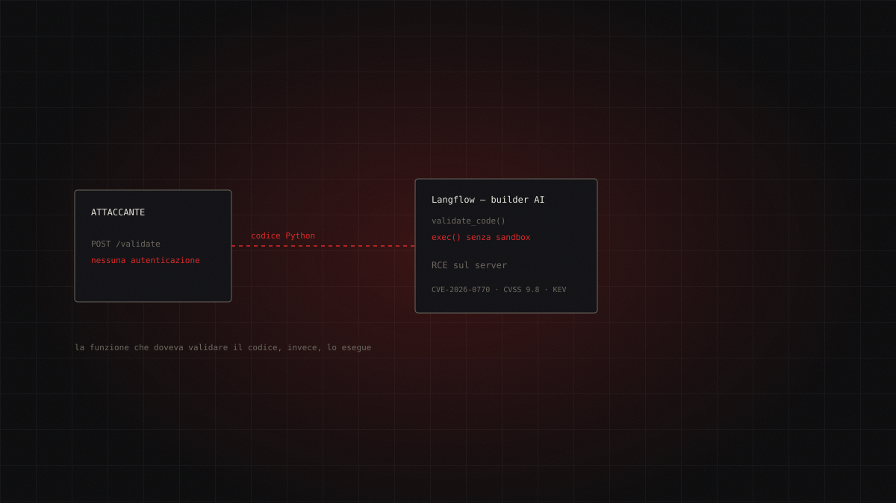</a>
</section>

<section class="shell"><aside class="dossier" data-reveal style="--i:3"><div class="dossier__head"><span>Scheda attore</span><span class="sev sev--critical">critical</span></div><dl class="dossier__body"><div class="field"><dt>Attore</dt><dd>Non attribuito · sfruttamento opportunistico (PoC pubblici su GitHub)</dd></div><div class="field"><dt>Alias</dt><dd>CVE-2026-0770, GHSA-g22f-v6f7-2hrh</dd></div><div class="field"><dt>Primo avvistamento</dt><dd>21 luglio 2026 (catalogo CISA KEV)</dd></div><div class="field"><dt>Bersagli</dt><dd>Istanze Langflow esposte su internet, Endpoint /validate senza protezione a monte</dd></div><div class="field"><dt>Settori</dt><dd>Sviluppo AI, startup, laboratori dati, chiunque prototipi agenti LLM</dd></div></dl></aside></section>

<section class="intro shell">
  <div class="intro__grid">
    <div>
      <p class="kicker">Il progetto</p>
      <p class="intro__text">Ogni giorno un attacco informatico reale, raccontato per intero: da dove nasce, come si &egrave; svolto passo per passo, come lo si rileva e come lo si ferma. Ogni tecnica &egrave; mappata su MITRE ATT&amp;CK e ogni affermazione poggia su fonti primarie — advisory di agenzie e report di chi ha condotto l'incident response. Dove le fonti sono incerte, lo diciamo.</p>
      <p><a class="intro__link" href="about.html">Chi c'è dietro &rarr;</a></p>
    </div>
    <div class="intro__side">
      <p class="sidebar__label">A colpo d'occhio</p>
      <div class="stats"><div class="stat"><span class="stat__n">30</span><span class="stat__l">dossier</span></div><div class="stat"><span class="stat__n">2</span><span class="stat__l">lingue</span></div><div class="stat"><span class="stat__n">120</span><span class="stat__l">fonti primarie</span></div><div class="stat"><span class="stat__n">65</span><span class="stat__l">tecniche ATT&CK</span></div></div>
      <p class="sidebar__label" style="margin-top:1.6rem">Per gravità</p>
      <div class="sevbars"><div class="sevbar"><span class="sev sev--critical">critical</span><div class="sevbar__track"><i class="sevbar__fill sevbar__fill--critical" style="width:47%"></i></div><span class="sevbar__n">14</span></div><div class="sevbar"><span class="sev sev--high">high</span><div class="sevbar__track"><i class="sevbar__fill sevbar__fill--high" style="width:27%"></i></div><span class="sevbar__n">8</span></div><div class="sevbar"><span class="sev sev--medium">medium</span><div class="sevbar__track"><i class="sevbar__fill sevbar__fill--medium" style="width:27%"></i></div><span class="sevbar__n">8</span></div></div>
    </div>
  </div>
</section>

<section class="archive shell">
  <div class="section-head"><h2>Archivio</h2><span class="count">30 dossier</span></div>
  <div class="entries">
<a class="entry" href="a/wordpress-wp2shell.html">
  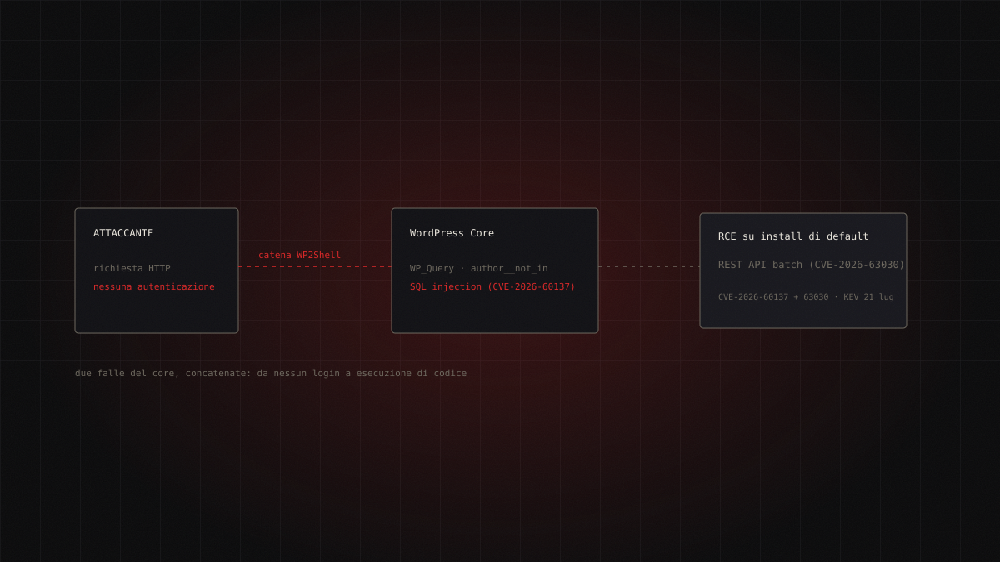
  <div class="entry__body">
    <time class="entry__date" datetime="2026-07-22">22.07.2026</time>
    <h3 class="entry__title">Il cuore di WordPress, eseguito da chi non ha fatto login: la catena WP2Shell</h3>
    <p class="entry__summary">WordPress muove una quota enorme del web pubblico, in Italia come altrove. Due falle nel suo nucleo — una SQL injection in WP_Query (CVE-2026-60137) e&hellip;</p>
    <p class="entry__actor">Non attribuito · sfruttamento opportunistico di massa (PoC pubblici) &nbsp;·&nbsp; <span class="sev sev--critical">critical</span></p>
    <span class="entry__more">Continua a leggere &rarr;</span>
  </div>
</a>
<a class="entry" href="a/qilin-danone.html">
  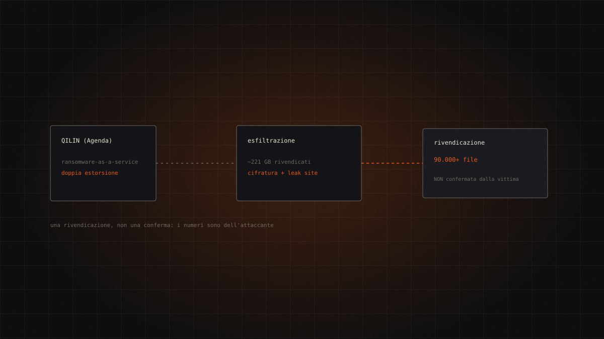
  <div class="entry__body">
    <time class="entry__date" datetime="2026-07-22">22.07.2026</time>
    <h3 class="entry__title">Qilin rivendica Danone: cosa dice la fonte, e cosa resta da verificare</h3>
    <p class="entry__summary">Il gruppo ransomware Qilin ha inserito Danone nel proprio sito di rivendicazioni, sostenendo di aver sottratto circa 221 GB di dati e pubblicando oltr&hellip;</p>
    <p class="entry__actor">Qilin (Agenda) — rivendicazione su leak site, non confermata dalla vittima &nbsp;·&nbsp; <span class="sev sev--high">high</span></p>
    <span class="entry__more">Continua a leggere &rarr;</span>
  </div>
</a>
<a class="entry" href="a/deepfake-voce-truffe.html">
  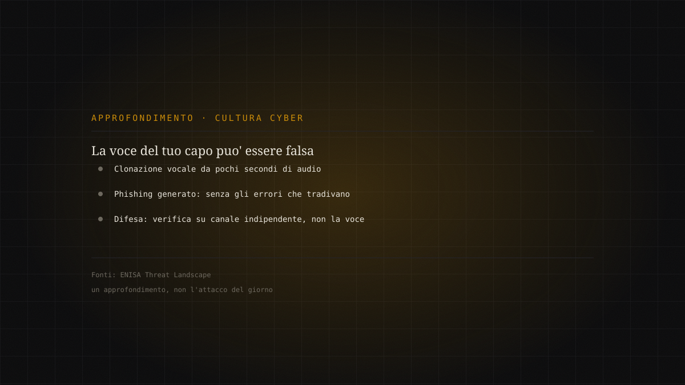
  <div class="entry__body">
    <time class="entry__date" datetime="2026-07-22">22.07.2026</time>
    <h3 class="entry__title">La voce del tuo capo può essere falsa: l&#x27;ingegneria sociale nell&#x27;era dell&#x27;AI</h3>
    <p class="entry__summary">L&#x27;ingegneria sociale resta la porta d&#x27;ingresso più usata, e l&#x27;AI l&#x27;ha resa più economica e credibile: la clonazione vocale permett&hellip;</p>
    <p class="entry__actor">Approfondimento editoriale · fonti ufficiali (ENISA) &nbsp;·&nbsp; <span class="sev sev--medium">medium</span></p>
    <span class="entry__more">Continua a leggere &rarr;</span>
  </div>
</a>
<a class="entry" href="a/dora-resilienza-operativa.html">
  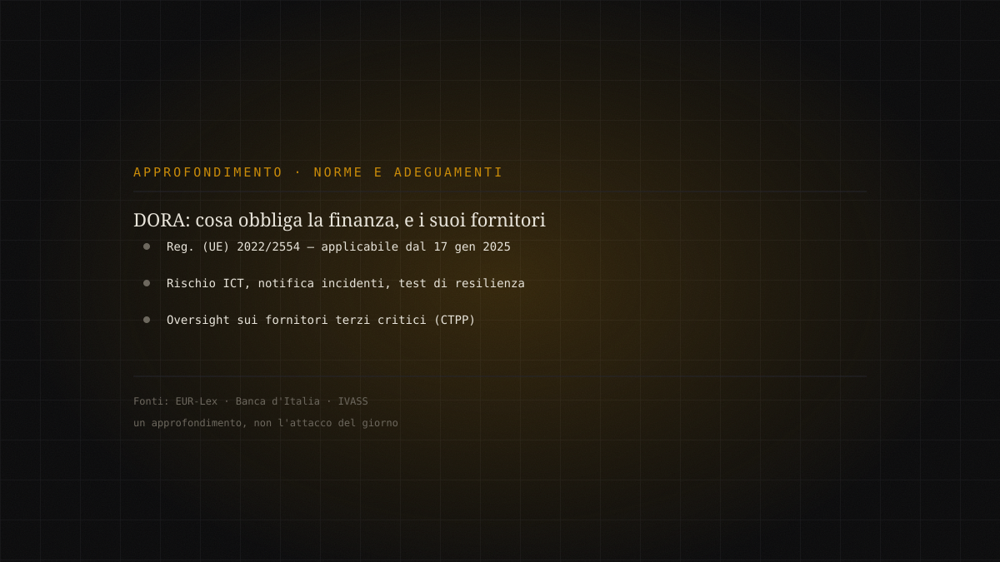
  <div class="entry__body">
    <time class="entry__date" datetime="2026-07-22">22.07.2026</time>
    <h3 class="entry__title">DORA, un anno dopo: cosa obbliga davvero il settore finanziario, e perché tocca anche i fornitori IT</h3>
    <p class="entry__summary">Non un attacco, ma la cornice di resilienza dentro cui il settore finanziario europeo deve reggere agli incidenti informatici. Il Regolamento (UE) 202&hellip;</p>
    <p class="entry__actor">Approfondimento editoriale · fonti ufficiali &nbsp;·&nbsp; <span class="sev sev--medium">medium</span></p>
    <span class="entry__more">Continua a leggere &rarr;</span>
  </div>
</a>
<a class="entry" href="a/garante-windtre-sanzione.html">
  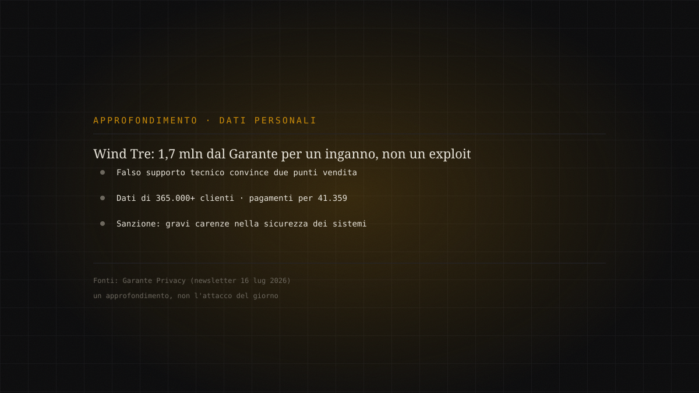
  <div class="entry__body">
    <time class="entry__date" datetime="2026-07-22">22.07.2026</time>
    <h3 class="entry__title">Wind Tre, 1,7 milioni dal Garante: quando la falla non è un exploit ma un operatore convinto al telefono</h3>
    <p class="entry__summary">Il Garante per la protezione dei dati personali ha sanzionato Wind Tre per 1.715.600 euro per gravi carenze nella sicurezza dei sistemi. Secondo l&#x2&hellip;</p>
    <p class="entry__actor">Approfondimento editoriale · provvedimento del Garante Privacy &nbsp;·&nbsp; <span class="sev sev--medium">medium</span></p>
    <span class="entry__more">Continua a leggere &rarr;</span>
  </div>
</a>
<a class="entry" href="a/mfa-resistente-phishing.html">
  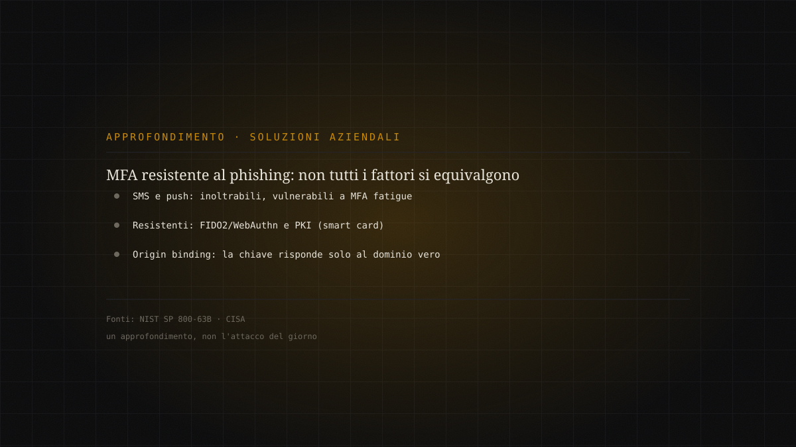
  <div class="entry__body">
    <time class="entry__date" datetime="2026-07-22">22.07.2026</time>
    <h3 class="entry__title">MFA resistente al phishing: perché non tutti i secondi fattori si equivalgono</h3>
    <p class="entry__summary">L&#x27;autenticazione a più fattori è la difesa più citata contro il furto di credenziali, ma «MFA» non è una categoria omogenea. SMS e notifiche push&hellip;</p>
    <p class="entry__actor">Approfondimento editoriale · fonti ufficiali (NIST, CISA) &nbsp;·&nbsp; <span class="sev sev--medium">medium</span></p>
    <span class="entry__more">Continua a leggere &rarr;</span>
  </div>
</a>
<a class="entry" href="a/joomla-upload-rce-wave.html">
  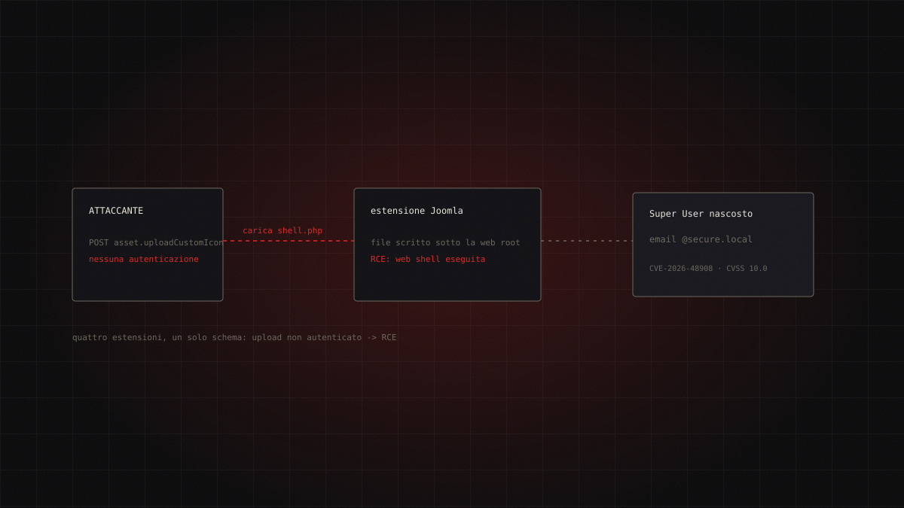
  <div class="entry__body">
    <time class="entry__date" datetime="2026-07-20">20.07.2026</time>
    <h3 class="entry__title">Quattro estensioni Joomla, un solo schema: l&#x27;ondata di upload non autenticati che pianta admin fantasma</h3>
    <p class="entry__summary">In poche settimane quattro estensioni Joomla molto diffuse — SP Page Builder, iCagenda, PageBuilder CK e Balbooa Forms — sono finite nel catalogo CISA&hellip;</p>
    <p class="entry__actor">Non attribuito (nessun attore o campagna nominati; disclosure di Phil Taylor / mySites.guru) &nbsp;·&nbsp; <span class="sev sev--critical">critical</span></p>
    <span class="entry__more">Continua a leggere &rarr;</span>
  </div>
</a>
<a class="entry" href="a/oracle-ebs-payments.html">
  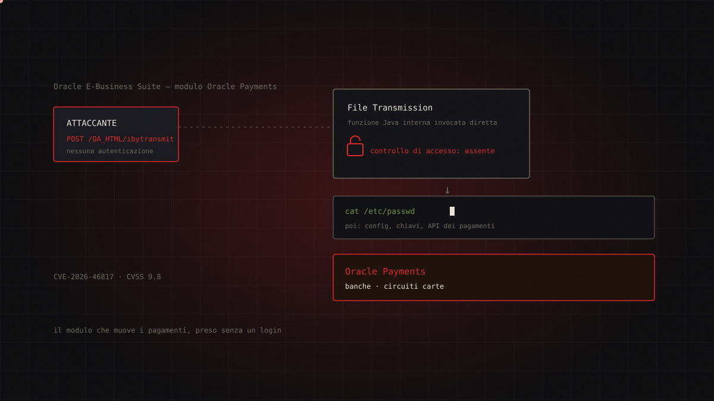
  <div class="entry__body">
    <time class="entry__date" datetime="2026-07-20">20.07.2026</time>
    <h3 class="entry__title">Il modulo che muove i pagamenti, preso senza un login: CVE-2026-46817 su Oracle E-Business Suite</h3>
    <p class="entry__summary">Oracle Payments è il motore di pagamento dentro Oracle E-Business Suite: è il punto in cui le applicazioni finanziarie dell&#x27;azienda parlano con b&hellip;</p>
    <p class="entry__actor">Non attribuito (prima osservazione su honeypot Defused; nessuna campagna né attore pubblici) &nbsp;·&nbsp; <span class="sev sev--critical">critical</span></p>
    <span class="entry__more">Continua a leggere &rarr;</span>
  </div>
</a>
<a class="entry" href="a/simplehelp-oidc-bypass.html">
  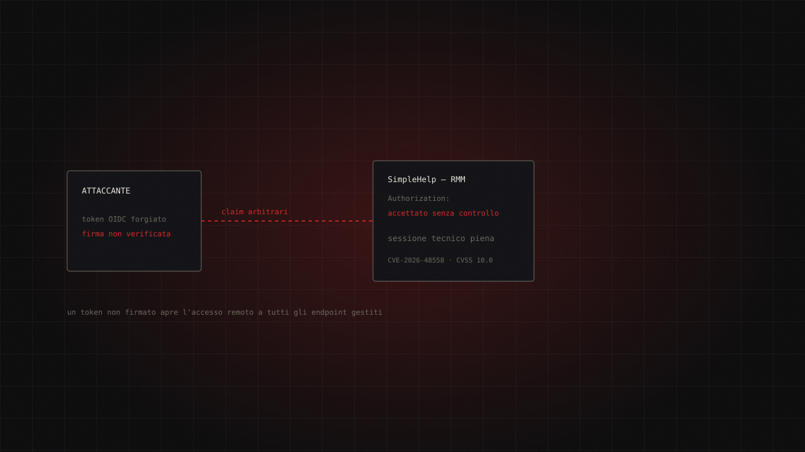
  <div class="entry__body">
    <time class="entry__date" datetime="2026-07-20">20.07.2026</time>
    <h3 class="entry__title">Un token che nessuno ha firmato: SimpleHelp accettava login falsi e apriva ogni endpoint gestito</h3>
    <p class="entry__summary">SimpleHelp è software di supporto remoto: chi lo controlla, controlla i computer che gestisce. CVE-2026-48558 (CVSS 10.0) è un bypass di autenticazion&hellip;</p>
    <p class="entry__actor">Non attribuito per l&#x27;accesso; post-sfruttamento con loader TaskWeaver e stealer Djinn (Blackpoint Cyber) &nbsp;·&nbsp; <span class="sev sev--critical">critical</span></p>
    <span class="entry__more">Continua a leggere &rarr;</span>
  </div>
</a>
<a class="entry" href="a/ransomware-raas-difesa.html">
  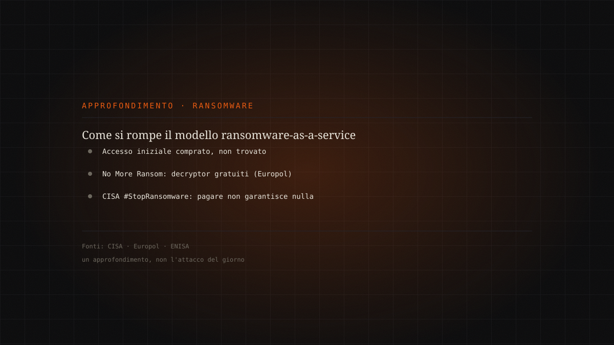
  <div class="entry__body">
    <time class="entry__date" datetime="2026-07-20">20.07.2026</time>
    <h3 class="entry__title">Come si rompe il modello ransomware-as-a-service: cosa dicono davvero le fonti ufficiali</h3>
    <p class="entry__summary">Il ransomware oggi è un&#x27;industria di servizi, non un lupo solitario: operatori che affittano il malware, affiliati che colpiscono, broker che ven&hellip;</p>
    <p class="entry__actor">Approfondimento editoriale · fonti ufficiali &nbsp;·&nbsp; <span class="sev sev--high">high</span></p>
    <span class="entry__more">Continua a leggere &rarr;</span>
  </div>
</a>
<a class="entry" href="a/cra-prodotti-digitali.html">
  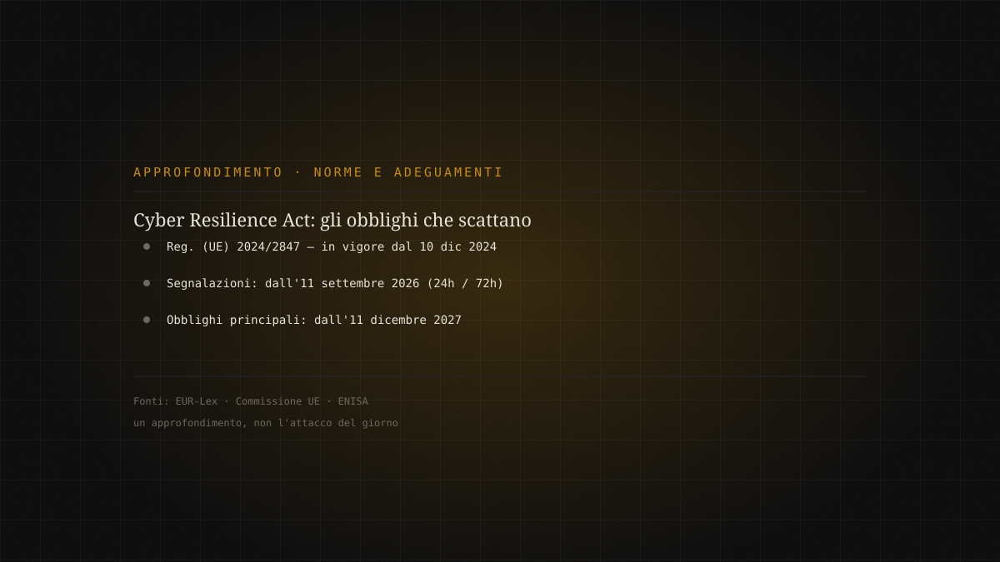
  <div class="entry__body">
    <time class="entry__date" datetime="2026-07-20">20.07.2026</time>
    <h3 class="entry__title">Cyber Resilience Act: cosa scatta l&#x27;11 settembre 2026, e cosa aspetta il 2027</h3>
    <p class="entry__summary">Non un attacco, ma una scadenza che si avvicina. Il Cyber Resilience Act — Regolamento (UE) 2024/2847 — è in vigore dal 10 dicembre 2024, ma i suoi ob&hellip;</p>
    <p class="entry__actor">Approfondimento editoriale · fonti ufficiali &nbsp;·&nbsp; <span class="sev sev--medium">medium</span></p>
    <span class="entry__more">Continua a leggere &rarr;</span>
  </div>
</a>
<a class="entry" href="a/data-breach-72-ore.html">
  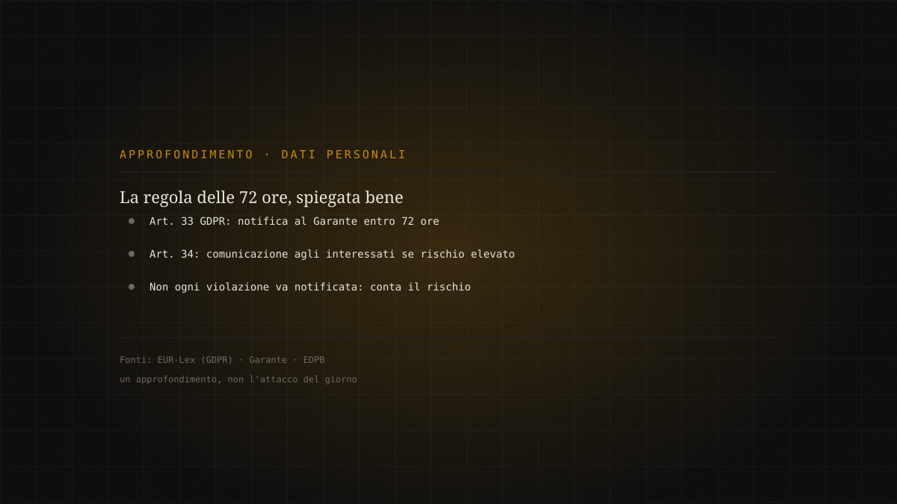
  <div class="entry__body">
    <time class="entry__date" datetime="2026-07-20">20.07.2026</time>
    <h3 class="entry__title">La regola delle 72 ore, spiegata bene: cosa obbliga davvero il GDPR dopo una violazione</h3>
    <p class="entry__summary">&quot;Hai 72 ore per notificare&quot; è la frase che tutti ripetono e pochi spiegano. Questo approfondimento mette in fila cosa dice davvero il GDPR: &hellip;</p>
    <p class="entry__actor">Approfondimento editoriale · fonti ufficiali &nbsp;·&nbsp; <span class="sev sev--medium">medium</span></p>
    <span class="entry__more">Continua a leggere &rarr;</span>
  </div>
</a>
<a class="entry" href="a/fattore-umano-social-engineering.html">
  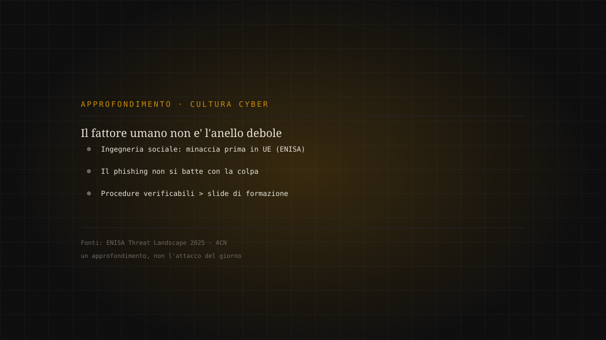
  <div class="entry__body">
    <time class="entry__date" datetime="2026-07-20">20.07.2026</time>
    <h3 class="entry__title">Il fattore umano non è l&#x27;anello debole: perché la colpa non ferma il phishing</h3>
    <p class="entry__summary">L&#x27;ingegneria sociale è tra le minacce prime nell&#x27;Unione secondo l&#x27;ENISA, eppure la reazione più comune resta la peggiore: dare la colpa&hellip;</p>
    <p class="entry__actor">Approfondimento editoriale · fonti ufficiali &nbsp;·&nbsp; <span class="sev sev--medium">medium</span></p>
    <span class="entry__more">Continua a leggere &rarr;</span>
  </div>
</a>
<a class="entry" href="a/nis2-italia-recepimento.html">
  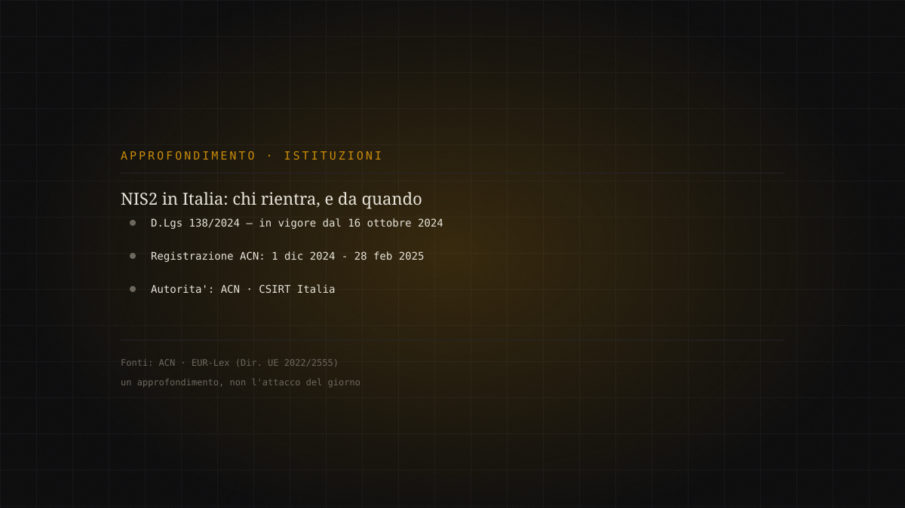
  <div class="entry__body">
    <time class="entry__date" datetime="2026-07-20">20.07.2026</time>
    <h3 class="entry__title">NIS2 in Italia: chi rientra davvero, da quando, e perché riguarda anche i fornitori</h3>
    <p class="entry__summary">Non un attacco, ma il perimetro dentro cui gli attacchi si gestiscono. La direttiva NIS2 è stata recepita in Italia con il D.Lgs 138/2024, in vigore d&hellip;</p>
    <p class="entry__actor">Approfondimento editoriale · fonti ufficiali &nbsp;·&nbsp; <span class="sev sev--medium">medium</span></p>
    <span class="entry__more">Continua a leggere &rarr;</span>
  </div>
</a>
<a class="entry" href="a/fortisandbox-oscmd.html">
  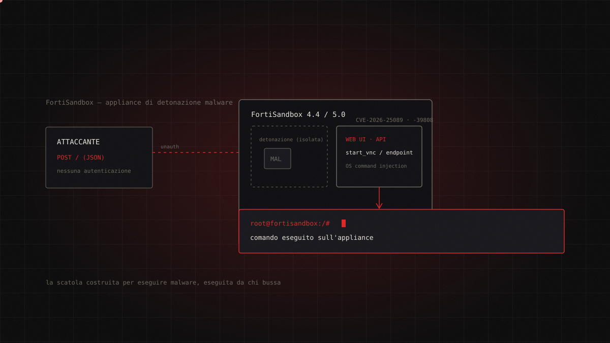
  <div class="entry__body">
    <time class="entry__date" datetime="2026-07-19">19.07.2026</time>
    <h3 class="entry__title">La scatola che esegue malware, eseguita da chi bussa: due RCE su FortiSandbox</h3>
    <p class="entry__summary">FortiSandbox è la scatola dove i file sospetti vengono fatti esplodere in sicurezza. Due vulnerabilità di OS command injection senza autenticazione — &hellip;</p>
    <p class="entry__actor">Non attribuito (nessuna campagna pubblica; sfruttamento segnalato da CISA) &nbsp;·&nbsp; <span class="sev sev--critical">critical</span></p>
    <span class="entry__more">Continua a leggere &rarr;</span>
  </div>
</a>
<a class="entry" href="a/sonicwall-sma1000-mfa.html">
  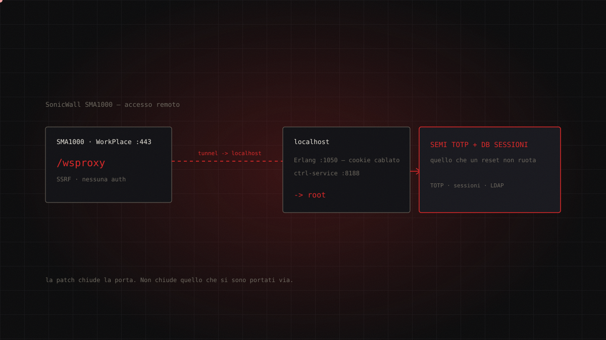
  <div class="entry__body">
    <time class="entry__date" datetime="2026-07-18">18.07.2026</time>
    <h3 class="entry__title">SonicWall SMA1000: patchi, resetti le password, e sono ancora dentro</h3>
    <p class="entry__summary">Due zero-day sulle appliance di accesso remoto SonicWall SMA1000, sfruttati in catena prima ancora della disclosure. Il primo è un SSRF senza autentic&hellip;</p>
    <p class="entry__actor">Non attribuito (infrastruttura dietro un provider VPN) &nbsp;·&nbsp; <span class="sev sev--critical">critical</span></p>
    <span class="entry__more">Continua a leggere &rarr;</span>
  </div>
</a>
<a class="entry" href="a/knxlock-bcu-key.html">
  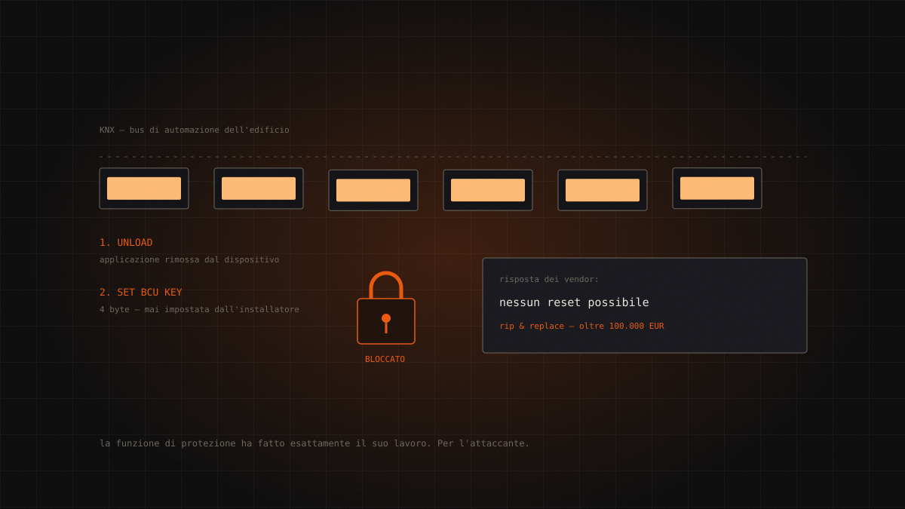
  <div class="entry__body">
    <time class="entry__date" datetime="2026-07-17">17.07.2026</time>
    <h3 class="entry__title">Nessun malware, nessun riscatto, nessuna patch: il caso KNXlock</h3>
    <p class="entry__summary">Il 15 luglio 2026 CISA ha inserito nel catalogo KEV una CVE del 2023 che descrive un attacco del 2021. Non c&#x27;è codice malevolo: gli attaccanti sv&hellip;</p>
    <p class="entry__actor">Sconosciuto — nessuna attribuzione, nessuna richiesta di riscatto &nbsp;·&nbsp; <span class="sev sev--high">high</span></p>
    <span class="entry__more">Continua a leggere &rarr;</span>
  </div>
</a>
<a class="entry" href="a/fortibleed-inc-lynx.html">
  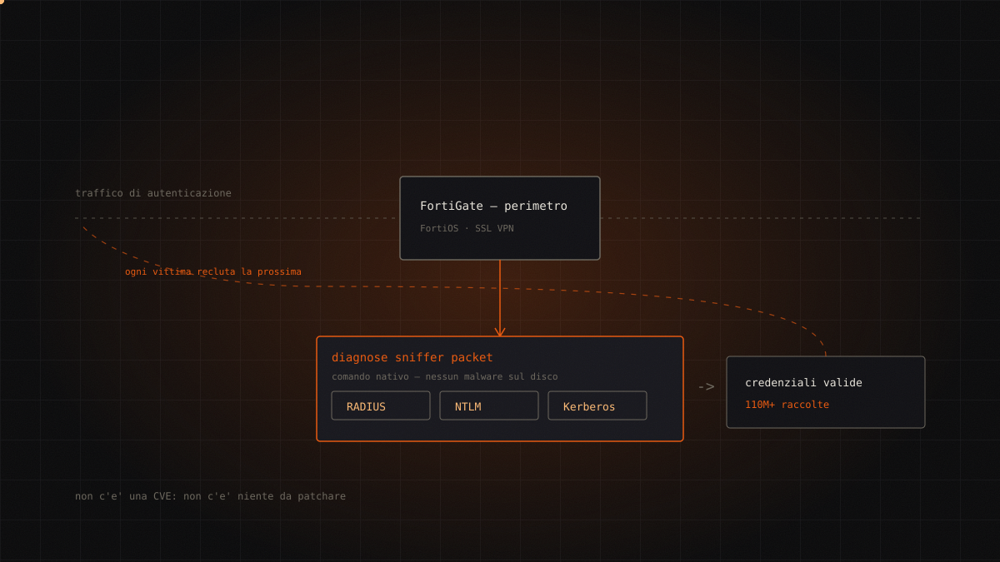
  <div class="entry__body">
    <time class="entry__date" datetime="2026-07-16">16.07.2026</time>
    <h3 class="entry__title">FortiBleed: non c&#x27;è una patch, perché non c&#x27;è una vulnerabilità</h3>
    <p class="entry__summary">Circa metà dei firewall Fortinet esposti su internet ha le credenziali amministrative in mano a un access broker. Non c&#x27;è una CVE da patchare: ci&hellip;</p>
    <p class="entry__actor">Initial Access Broker russofono (non confermato) &nbsp;·&nbsp; <span class="sev sev--high">high</span></p>
    <span class="entry__more">Continua a leggere &rarr;</span>
  </div>
</a>
<a class="entry" href="a/apt28-router-dns.html">
  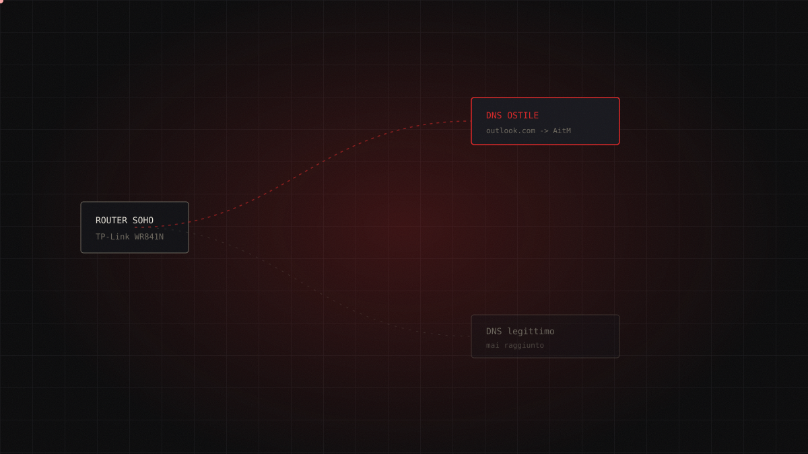
  <div class="entry__body">
    <time class="entry__date" datetime="2026-07-15">15.07.2026</time>
    <h3 class="entry__title">Il router da trenta euro che intercettava i ministeri degli esteri</h3>
    <p class="entry__summary">APT28 ha trasformato migliaia di router domestici in una rete di intercettazione contro ministeri degli esteri e forze dell&#x27;ordine, dirottando il&hellip;</p>
    <p class="entry__actor">APT28 &nbsp;·&nbsp; <span class="sev sev--critical">critical</span></p>
    <span class="entry__more">Continua a leggere &rarr;</span>
  </div>
</a>
<a class="entry" href="a/axios-npm.html">
  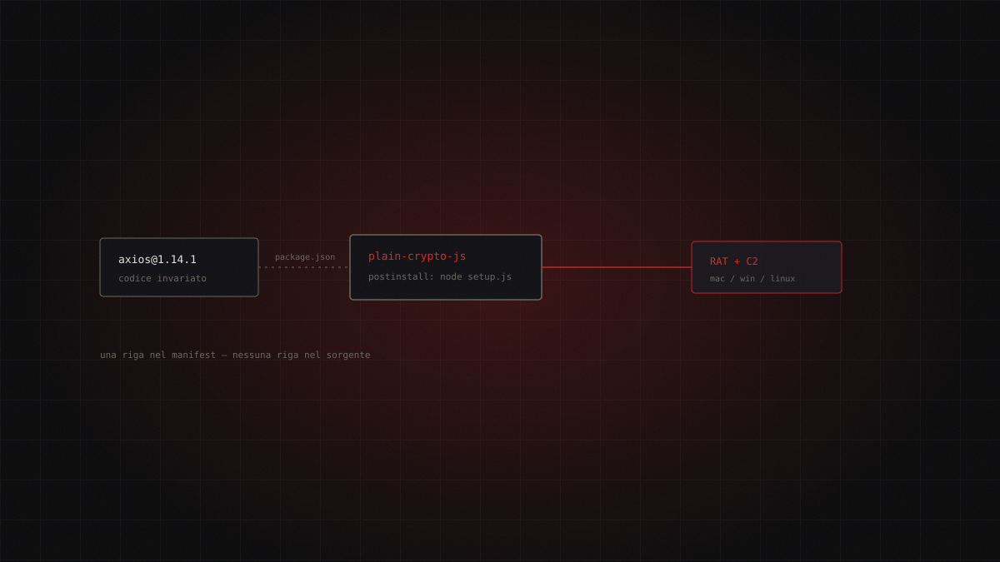
  <div class="entry__body">
    <time class="entry__date" datetime="2026-07-15">15.07.2026</time>
    <h3 class="entry__title">Axios, il manifest e il token che nessuno aveva revocato</h3>
    <p class="entry__summary">Il 31 marzo 2026 due release malevole di axios aggiungono una dipendenza-trappola senza toccare una riga del codice sorgente. npm aveva introdotto il &hellip;</p>
    <p class="entry__actor">Attore non attribuito &nbsp;·&nbsp; <span class="sev sev--critical">critical</span></p>
    <span class="entry__more">Continua a leggere &rarr;</span>
  </div>
</a>
<a class="entry" href="a/medusa-ummc.html">
  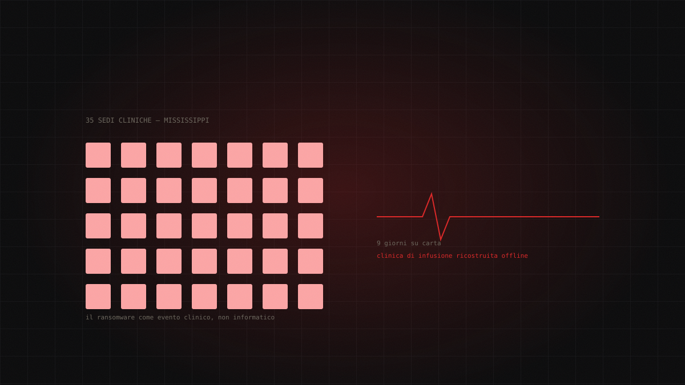
  <div class="entry__body">
    <time class="entry__date" datetime="2026-07-15">15.07.2026</time>
    <h3 class="entry__title">Medusa e UMMC: la clinica che ha imparato a funzionare offline</h3>
    <p class="entry__summary">Il 19 febbraio 2026 il più grande sistema sanitario del Mississippi va offline: 35 sedi cliniche chiuse, unico trauma center di Livello I dello stato &hellip;</p>
    <p class="entry__actor">Medusa &nbsp;·&nbsp; <span class="sev sev--critical">critical</span></p>
    <span class="entry__more">Continua a leggere &rarr;</span>
  </div>
</a>
<a class="entry" href="a/qilin-checkpoint.html">
  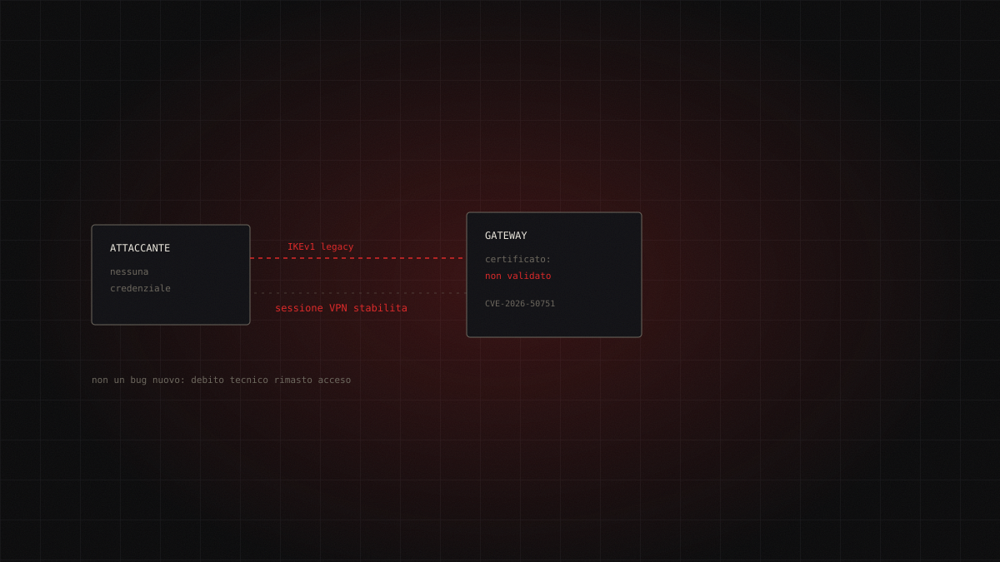
  <div class="entry__body">
    <time class="entry__date" datetime="2026-07-15">15.07.2026</time>
    <h3 class="entry__title">Qilin e il debito tecnico: come si entra in una VPN senza password</h3>
    <p class="entry__summary">Un difetto logico nella validazione dei certificati durante lo scambio chiavi IKEv1 permetteva di aprire una sessione VPN Check Point senza conoscere &hellip;</p>
    <p class="entry__actor">Qilin &nbsp;·&nbsp; <span class="sev sev--critical">critical</span></p>
    <span class="entry__more">Continua a leggere &rarr;</span>
  </div>
</a>
<a class="entry" href="a/splunk-cve-2026-20253.html">
  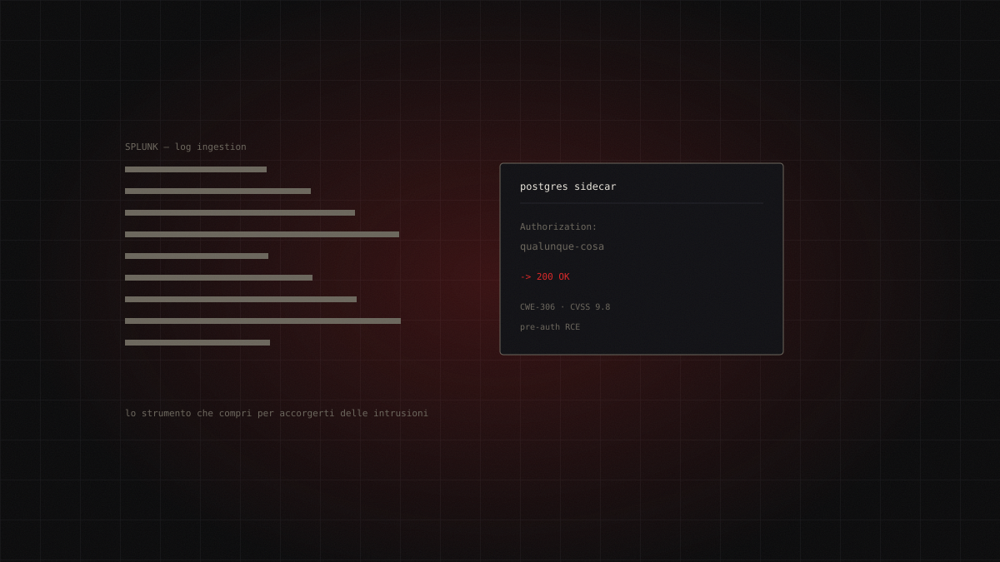
  <div class="entry__body">
    <time class="entry__date" datetime="2026-07-15">15.07.2026</time>
    <h3 class="entry__title">Il SIEM che non chiedeva la password</h3>
    <p class="entry__summary">CVSS 9.8, pre-autenticazione, RCE. La vulnerabilità non è in Splunk, ma in un componente PostgreSQL interno che accetta qualunque credenziale gli veng&hellip;</p>
    <p class="entry__actor">Non attribuito &nbsp;·&nbsp; <span class="sev sev--critical">critical</span></p>
    <span class="entry__more">Continua a leggere &rarr;</span>
  </div>
</a>
<a class="entry" href="a/storm2603-warlock.html">
  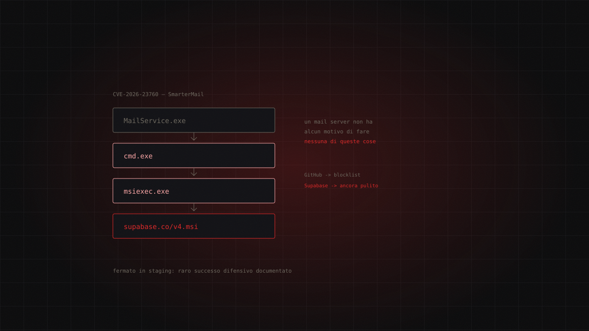
  <div class="entry__body">
    <time class="entry__date" datetime="2026-07-15">15.07.2026</time>
    <h3 class="entry__title">Due attaccanti, una rete: il caso Storm-2603 e la fine dell&#x27;intrusione singola</h3>
    <p class="entry__summary">Storm-2603 sfrutta un bypass di autenticazione in SmarterMail per installare Velociraptor come C2 e mettere in scena il ransomware Warlock. Ma il dett&hellip;</p>
    <p class="entry__actor">Storm-2603 &nbsp;·&nbsp; <span class="sev sev--critical">critical</span></p>
    <span class="entry__more">Continua a leggere &rarr;</span>
  </div>
</a>
<a class="entry" href="a/volt-typhoon-ot.html">
  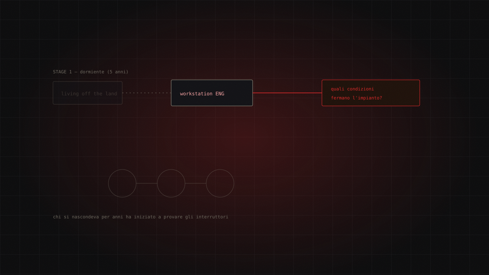
  <div class="entry__body">
    <time class="entry__date" datetime="2026-07-15">15.07.2026</time>
    <h3 class="entry__title">Volt Typhoon ha smesso di guardare: ora cerca il pulsante di arresto</h3>
    <p class="entry__summary">Per cinque anni Volt Typhoon si è nascosto dentro le infrastrutture critiche americane senza toccare nulla. Nel 2026 Dragos lo vede manipolare le work&hellip;</p>
    <p class="entry__actor">Volt Typhoon &nbsp;·&nbsp; <span class="sev sev--critical">critical</span></p>
    <span class="entry__more">Continua a leggere &rarr;</span>
  </div>
</a>
<a class="entry" href="a/interlock-clickfix.html">
  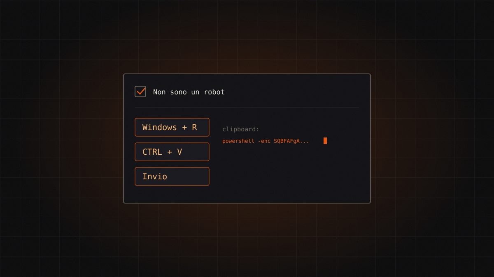
  <div class="entry__body">
    <time class="entry__date" datetime="2026-07-15">15.07.2026</time>
    <h3 class="entry__title">Interlock, il ransomware che entra dalla porta principale</h3>
    <p class="entry__summary">Interlock ha ribaltato il copione del ransomware: niente phishing, niente VPN bucata. La vittima visita un sito legittimo compromesso, vede un finto C&hellip;</p>
    <p class="entry__actor">Interlock &nbsp;·&nbsp; <span class="sev sev--high">high</span></p>
    <span class="entry__more">Continua a leggere &rarr;</span>
  </div>
</a>
<a class="entry" href="a/kimsuky-quishing.html">
  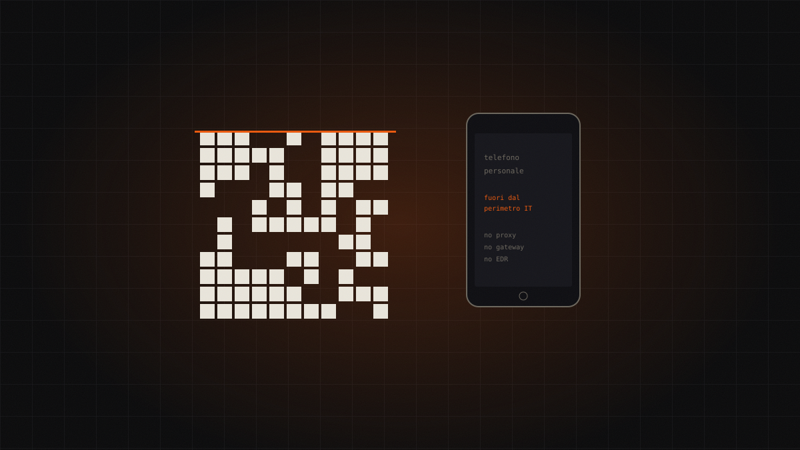
  <div class="entry__body">
    <time class="entry__date" datetime="2026-07-15">15.07.2026</time>
    <h3 class="entry__title">Il QR code che ruba la sessione, non la password</h3>
    <p class="entry__summary">Kimsuky ha smesso di combattere i filtri email aziendali. Ha semplicemente cambiato canale: un QR code costringe la vittima a passare al telefono pers&hellip;</p>
    <p class="entry__actor">Kimsuky &nbsp;·&nbsp; <span class="sev sev--high">high</span></p>
    <span class="entry__more">Continua a leggere &rarr;</span>
  </div>
</a>
<a class="entry" href="a/miasma-redhat-npm.html">
  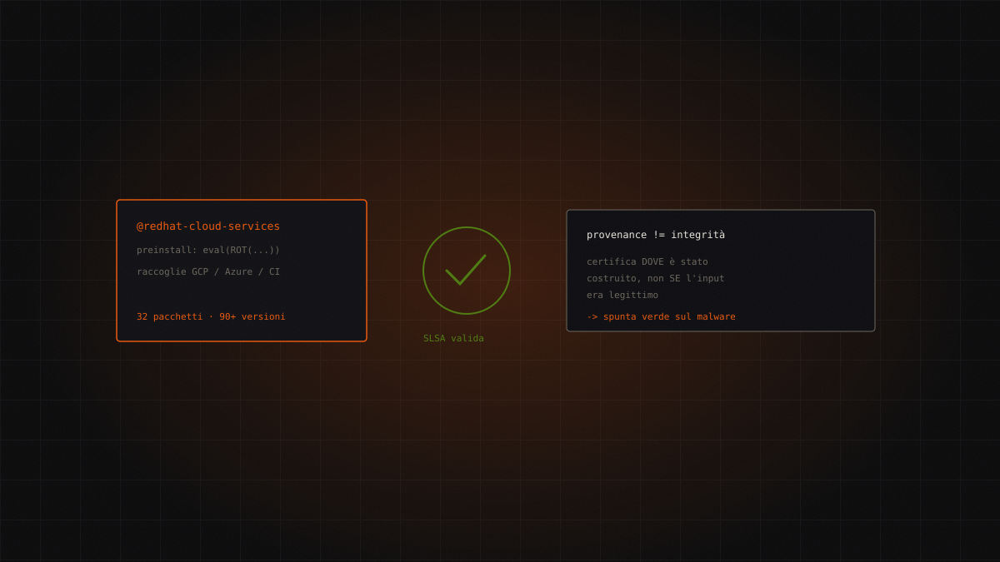
  <div class="entry__body">
    <time class="entry__date" datetime="2026-07-15">15.07.2026</time>
    <h3 class="entry__title">Miasma: il malware aveva un certificato di provenienza valido</h3>
    <p class="entry__summary">Il 1° giugno 2026 oltre 90 versioni malevole dei pacchetti @redhat-cloud-services finiscono su npm con attestazioni di provenienza SLSA perfettamente &hellip;</p>
    <p class="entry__actor">Attore non attribuito (codice derivato da TeamPCP) &nbsp;·&nbsp; <span class="sev sev--high">high</span></p>
    <span class="entry__more">Continua a leggere &rarr;</span>
  </div>
</a>
<a class="entry" href="a/sharepoint-cve-2026-45659.html">
  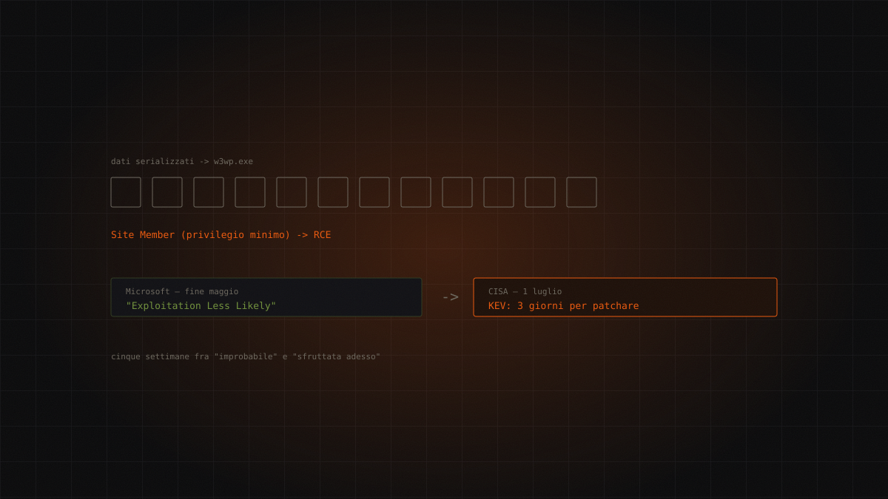
  <div class="entry__body">
    <time class="entry__date" datetime="2026-07-15">15.07.2026</time>
    <h3 class="entry__title">«Exploitation Less Likely», poi tre giorni per patchare</h3>
    <p class="entry__summary">Microsoft l&#x27;aveva classificata «Exploitation Less Likely». Cinque settimane dopo CISA la inseriva nel KEV con tre giorni di tempo per rimediare. &hellip;</p>
    <p class="entry__actor">Non attribuito &nbsp;·&nbsp; <span class="sev sev--high">high</span></p>
    <span class="entry__more">Continua a leggere &rarr;</span>
  </div>
</a></div>
</section>

<section class="follow shell">
  <div class="follow__inner">
    <div>
      <p class="kicker">TikTok</p>
      <h2 class="follow__title">Ogni dossier diventa un video</h2>
      <p class="follow__body">Sessanta secondi per capire un attacco reale, con le fonti in descrizione.</p>
    </div>
    <a class="cta" href="https://www.tiktok.com/@h4ckprojct" target="_blank" rel="noopener">Guarda su TikTok &rarr;</a>
  </div>
</section></main>
<footer class="footer">
  <div class="shell">
    <div class="footer__top">
      <div class="footer__brand">
        <p class="wordmark">HACK<em>/</em>PROJECT</p>
        <p class="footer__tag">Threat Intelligence Quotidiana</p>
        <p class="footer__disclaimer"><strong>HACK/PROJECT</strong> &mdash; analisi di attacchi informatici documentati pubblicamente, mappati su MITRE ATT&amp;CK&reg;. Contenuto a scopo difensivo ed educativo: descriviamo tattiche e tecniche cosi&#768; come riportate da agenzie e ricercatori, senza distribuire codice offensivo. Dove le fonti sono incerte, lo dichiariamo nel testo. ATT&amp;CK&reg; e&#768; un marchio registrato di The MITRE Corporation; progetto non affiliato a MITRE.</p>
      </div>
      <div class="footer__col"><p class="footer__label">Archivio</p><a href="index.html">Ultimi dossier</a><a href="about.html">Chi sono</a></div><div class="footer__col"><p class="footer__label">Chi sono</p><a href="about.html">Chi sono</a><a href="methodology.html">Metodologia</a><a href="about.html#contatti">Contattami</a><a href="https://spidercivi.github.io/">Portfolio</a></div><div class="footer__col"><p class="footer__label">Segui</p><a href="newsletter.html">Newsletter</a><a href="feed.xml">RSS</a><a href="https://www.tiktok.com/@h4ckprojct">TikTok</a><a href="https://github.com/SpiderCivi">GitHub</a><a href="mailto:civiero.riccardo03@gmail.com">civiero.riccardo03@gmail.com</a></div>
    </div>
    <div class="footer__bottom">
      <p>&copy; 2026 Riccardo Civiero</p>
      <p class="footer__legal">Contenuto a scopo difensivo ed educativo. MITRE ATT&amp;CK&reg; &egrave; un marchio registrato di The MITRE Corporation; questo progetto non &egrave; affiliato n&eacute; sponsorizzato da MITRE, CISA o dai vendor citati.</p>
    </div>
  </div>
</footer>
<script src="../assets/js/main.js?v=41bc8a40" defer></script>
</body>
</html>
